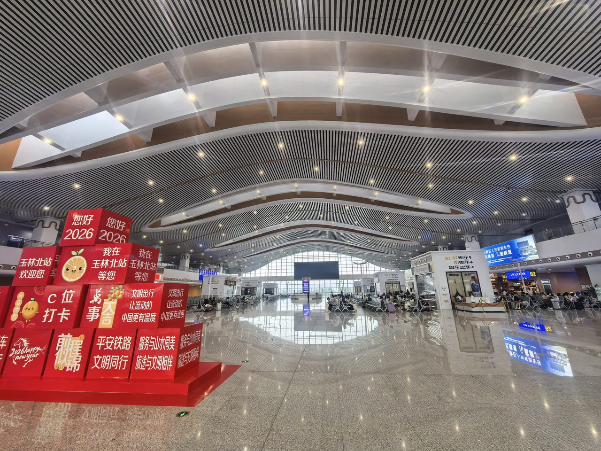
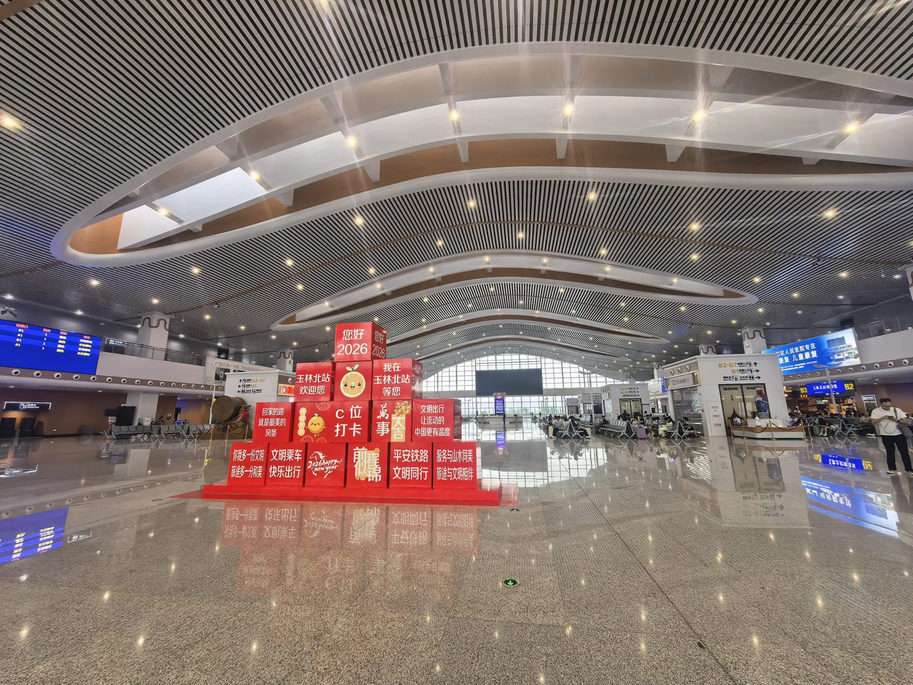

先说一个很多品牌方踩过的坑。
一家广西本地的餐饮连锁品牌，年初在玉林北站候车厅投了一块灯箱，8万一个月。投了三个月，效果一般——问了一圈旅客，"没注意看"；问品牌自己，"客流不少，但感觉没打到点上"。后来我们帮他们做了一个简单的调整：把投放从"全天候"改成"早晚高峰+周末"，同时把预算的40%从候车厅挪到了出站通道。次月，品牌到店咨询量涨了35%。

同样的站、差不多的钱，为什么效果差了这么多？答案就在排期策略和点位分配上。
2026年Q1，全国户外广告市场规模达到639.69亿元，14,012个品牌参与投放，高铁广告复合增长率稳定在15%以上。品牌涌入的多了，广告位的"注意力稀缺"问题就更突出——不是你的广告不好，是你的广告出现在了别人"不想看"的时间段，或者说出现在了别人"看了也没用"的位置。
这篇文章不谈大趋势，只谈一件事：在南玉高铁三个站点，如何用有限的预算，通过对时段、点位和排期节奏的精细规划，把每一分钱花在刀刃上。

一、先认清一个事实：高铁站不是"全天热"
很多品牌把高铁站的客流想象成"一个平铺的常数"——以为从早到晚都是差不多的人流密度。实际情况远不是这样。
以南玉高铁玉林北站为例，一天20列动车——但列车不是均匀分布的。从我们对运行图的观察，客流分布在一天中呈现明显的"双峰一谷"结构：
| 时段 | 客流特征 | 旅客状态 | 广告触达效率 |
|---|---|---|---|
| 早高峰 7:00-9:30 | 商务出行密集，玉林→南宁方向集中发车 | 赶车状态，停留时间短，注意力需要强刺激 | 中高（大屏/刷屏机动态内容最优） |
| 午间平峰 11:00-14:00 | 客流回落，零星旅客为主 | 候车时间长，阅读灯箱意愿高 | 中（适合信息密集型内容） |
| 晚高峰 16:00-20:00 | 返程+休闲出行叠加，南宁→玉林方向为主 | 等待+消费意愿高，出站通道是黄金场景 | 高（出站通道灯箱+刷屏机组合最佳） |
| 夜间 20:00以后 | 末班车时段，少量旅客 | 疲惫感上升，对广告内容几乎无耐心 | 低 |
同样的逻辑也适用于横州站和兴业南站，只不过这两个站以产业商务客流为主，高峰时段更集中在周一上午和周五下午——产业人士周期性往返的特征更明显。
认清这一点之后，你会发现：那些全天候投放的品牌，至少有一半的广告费花在了"低触达时段"上。
二、三种"错峰"策略：不是抄近道，是换赛道
户外广告行业的排期策略研究中，有三种已被验证有效的模式可以应用在南玉高铁站：
策略一：脉冲式投放——"打一周、停一周"的节奏打法
脉冲式投放的核心逻辑是：高频短周期集中投放，制造话题热度后暂停，利用线上传播延续影响力。
这种策略特别适合有明确营销节点的品牌——新品发布、节日促销、品牌周年庆等。具体操作：
- 投放周期：活动前一周开始上刊，活动期间高频覆盖，活动结束后再维持三天（收尾期），然后下刊。总周期约15-20天。
- 点位策略：集中火力打一个站的"黄金点位"，不做分散。比如玉林北站的出站通道E1-E10（出站首视区）+ 候车厅刷屏机B1-B14（候车等待区），形成"到达-等待"双节点覆盖。
- 预算参考：15天脉冲投放，玉林北站出站通道+刷屏机组，总预算约8-15万。
- 案例场景：一家南宁的连锁奶茶品牌，新品上市周在玉林北站做脉冲投放——出站通道灯箱（到达即看到）+刷屏机轮播（候车时强化记忆）。一周内，品牌在玉林地区的线上搜索量涨了22%。
关键是"收"——活动结束后果断下刊，把省下来的预算留给下一波脉冲。品牌记忆的"间隔效应"研究表明，间歇性曝光比持续性曝光的长期记忆留存率高18%。
策略二：错峰时段投放——"不要在黄金时段和大品牌抢"
热门站点、热门时段，头部品牌扎堆。用户注意力被稀释——一块LED大屏上同时轮播15秒×10个品牌，你的15秒只是其中之一。
错峰投放的思路是：选择非黄金时段或非热门节点，用"独占注意力"换"更高效率"。
- 具体操作：避开早8:00-9:30的商务高峰段，选择午间11:00-14:00或工作日周二-周四投放。这些时段旅客停留时间更长，且广告信息密度低。
- 点位推荐：横州站候车厅灯箱A1-A8（4-6万/月），午间时段茉莉花产业人员停留时间长，信息阅读率远高于早高峰；兴业南站出站厅B1-B5（2-3万/月），工业客群下午到站后有充足时间浏览广告内容。
- 预算参考：横州站候车厅灯箱，错峰投放2-4万/月（议价空间大），加上兴业南站出站厅，总预算4-7万/月覆盖两个站。
- 案例场景：一家兴业县的碳酸钙新材料企业，最初在玉林北站候车厅投"正位"灯箱（8万/月），与大量消费品品牌拥挤。后改为兴业南站出站厅灯箱（2万/月），面向精准的产业客群——同行合作伙伴和供应链客户——触达人群中"潜在决策者"占比从不到5%提升到超过40%。
策略三：多站联动排期——"一个品牌、三个站、一张时间表"
对于预算在15万/月以上的品牌，可以考虑多站联动的排期策略。但这不意味着"每个站都投一模一样的"，而是根据不同站的客流节奏，设计一张"分时分站"的排期表。
| 站点 | 投放节奏 | 推荐点位组合 | 月预算 | 覆盖逻辑 |
|---|---|---|---|---|
| 玉林北站（主力） | 每月前3周全点位覆盖，第4周缩减为出站通道单点位 | 候车厅灯箱A1-A8（8万）+ 出站通道E1-E10（2.5-3.5万/个） | 10-20万 | 主力站点做"冲击力"，峰值期全覆盖 |
| 横州站（辅助） | 茉莉花采收旺季（5-6月、9-10月）重点投放，其余月份保持候车厅单点位 | 候车厅灯箱A1-A8（4-6万）+ 连廊C1-C3（4万） | 4-10万 | 季节性产业流量爆发期做重点覆盖 |
| 兴业南站（补充） | 每季度选1个月做"围点打援"（出站厅+地道+候车厅联动），其余月份保持出站厅单点位 | 出站厅B1-B5（2-3万）+ 地道B6-B9（2万）+ 候车厅A1-A8（3-4万） | 2-8万 | 县域市场做"低频高浓度"，季度爆发替代月月均摊 |
这套多站联动排期表的总预算范围在16-38万/月之间（峰值月），平峰月可以压缩到8-15万。关键不在于花多少钱，而在于钱花得"有节奏"——旺季猛、淡季稳、不发力的时候也不浪费。
三、实操落地：先用这三步做个"排期体检"
不管预算大小，在确定投放方案之前，建议品牌方先走完这三步：
- 画出你品牌自己的"客流热力图"。不是高铁站的总客流，而是你的目标人群在什么时段、什么方向（南宁→玉林还是玉林→南宁）、什么站出现得最多。比如一家玉林本地的建材品牌，目标客户是各县来玉林采购的经销商——那么他们的出行高峰是周一上午（入玉林方向）和周五下午（出玉林方向），对应的最佳投放点和时段就不一样。
- 确定你的投放"节奏型"。是脉冲型（有明确营销节点）、错峰型（预算有限要精打细算）还是联动型（预算充足要多点开花）？选一种，不要什么都要——三种混在一起，效果并不等于三倍。
- 以月为单位做"排期日历"。把12个月分成"爆发月"（3-4月三月三、5-6月端午+暑期预热、9-10月双节+采收旺季、12-1月春节前）和"维持月"（其余月份），在爆发月全量投入，在维持月降到最低保障线——保留1-2个核心点位，维持基础曝光即可。
四、别忽视"创意节奏"——排期和内容是绑在一起的
错峰投放不只是时段调整，还需要配合内容的节奏变化。同样的点位、不同的时间，旅客的状态不一样——他们看到的广告就应该不一样。
- 早高峰赶车状态：广告内容要"一句话讲清楚"——大号品牌名+核心卖点+强视觉冲击，灯箱用大色块+粗字体，LED用短动画（5-8秒循环）。旅客没时间读，但他们会"看一眼记住"。
- 午间等待状态：可以放更多信息——产品优势、促销详情、联系方式。灯箱上用文字量稍多的版本，刷屏机用15秒完整版广告片。
- 周末休闲出行：内容调性可以更"轻松"——旅行推荐、生活方式类展示，甚至可以在刷屏机上播放品牌故事短片。
一个简单的实操建议：同一块灯箱位置，工作日的画面和周末的画面可以不同。工作日放"商务版"（强调产品力），周末放"生活版"（强调场景体验）。这个切换成本不高，但对触达效率的提升很显著。
五、写在最后：高铁广告已经过了"占个位就行"的阶段
2026年Q1，全国14,012个品牌在户外广告上砸了639.69亿元——这是个"买得到位"只是起跑线的时代。真正的胜负手在于：你花同样的钱，能不能比别人多触达一轮、多转化一次。
错峰投放的本质不是"省钱"，而是"把每一分钱的广告效果放大"。在玉林北站、横州站、兴业南站这三个覆盖桂东南2000万人口的流量入口上，排期策略的差异，可能就是你的品牌在本地市场"被记住"还是"被忽略"之间的那条线。
高铁站的广告位不是超市货架——先到先占。它更像电台的黄金档——什么时间播、播什么内容、播多久、停多久——这四个变量决定了广告效果的上限。而预算，只是下限。
—— 广西联屏传媒，南珠高铁南玉段广告独家运营商 | 李洪鑫 18878774848（微信同号）